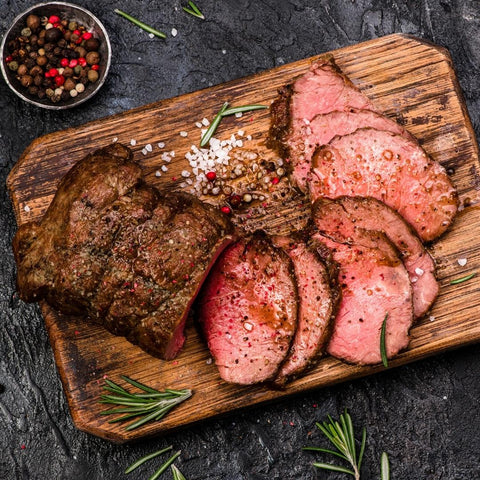
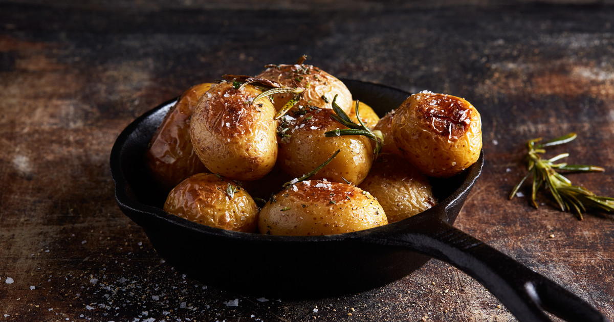

Älgstek med ugnsrostade potatisar
Ingredienser
Älgsteken
- 2000g Älgstek
- Smör och olja för stekning
- Salt och Peppar (nymalen)
Ugnsrostade Potatisen
- 1kg delikatesspotatis (eller annan liten potatis)
- 1,5 msk Bong Touch of Taste Kycklingfond
- olivolja
- 2 klyftor vitlök
- färsk timjan
- flingsalt


Instruktioner
Ugnsrostade Potatisen:
- Sätt ugnen på 200° eller 180° varmluft.
- Tvätta potatisen och lägg på en plåt. Strö över rosmarin.
-
Skala vitlöksklyftorna och krossa dem. Fördela vitlöken över
potatisen.
- Smält smör och ringla över.
- Tillaga i mitten av ugnen ca 30 min.
- Strö över salt innan servering.
Älgsteken:
-
Ta helst ut köttet ur kylen i god tid så att det är rumstempererat
när du lagar till det. Torka av och salta köttet innan stekning
- Sätt ugnen på 125 grader
-
Bryn steken i smör (för smak) och olja (för värme) på hög värme i
stekpanna. 45-60 sekunder på varje sida eller tills den får en bra
stekyta (det ger god smak).
-
Lägg över köttet i en ugnssäker form och peppra. Stick in
stektermometern så att toppen kommer in mitt i köttet. Sätt in
formen i mitten av ugnen
-
Ta ut formen när innertemperaturen når 53 grader. Lägg upp på en
skärbräda eller tallrik och låt vila 10-15 min under
bakplåtspapper eller en handduk (inte aluminiumfolie).
Temperaturen kommer öka några grader när steken vilar. Servera när
temperaturen är 56-58 grader.